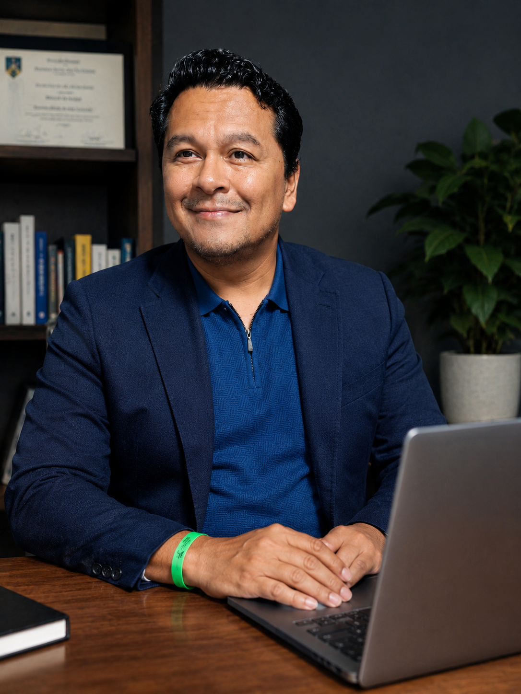
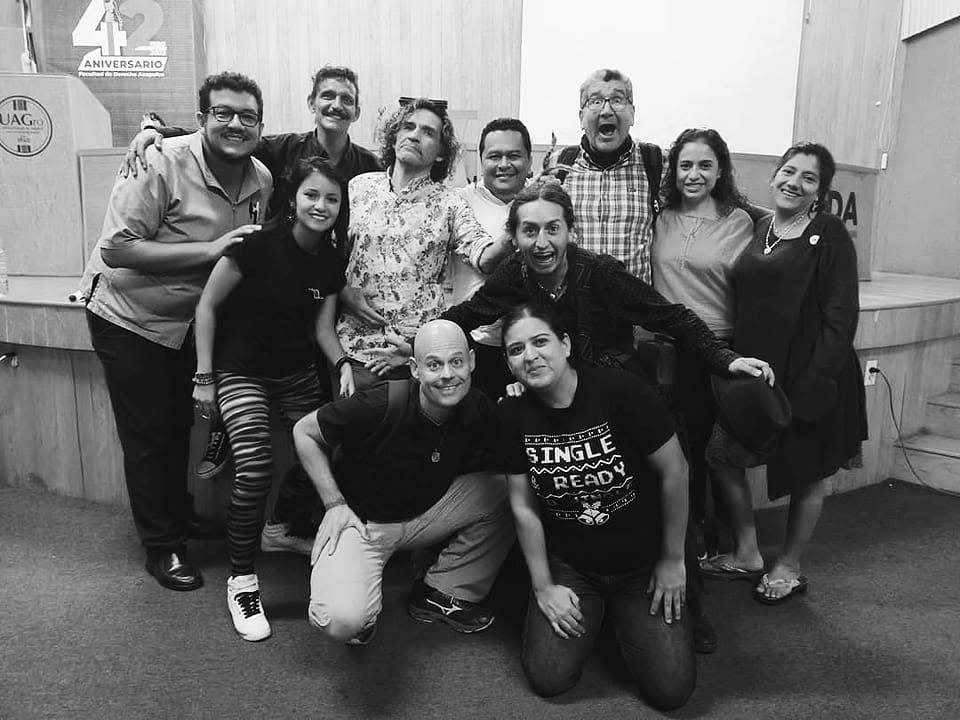

Acompañamiento humano
Estar presente con personas y comunidades desde una relación cercana, respetuosa y no invasiva.
Arte social · Comunidad · Emergencia
Payaso social y humanitario
La risa como encuentro, resiliencia y risastencia.

¿Quién es Chiflip?
Chiflip articula dimensiones presentes en la trayectoria de Gilberto: medicina, educación, intervención social, trabajo comunitario y atención humanitaria. Su lenguaje es el juego, la presencia y la risa como formas de abrir vínculos en contextos donde las personas necesitan sentirse vistas y acompañadas.
Este trabajo no sustituye atención médica, psicológica, psiquiátrica ni servicios de emergencia. Funciona como una práctica social, artística y educativa que acompaña procesos comunitarios desde el respeto, la escucha y la colaboración.
Propósito
Estar presente con personas y comunidades desde una relación cercana, respetuosa y no invasiva.
Activar recursos simbólicos y colectivos para recuperar confianza después de situaciones difíciles.
Usar el lenguaje clown para facilitar participación, expresión y convivencia.
Nombrar la risa como gesto de dignidad, vínculo y fuerza frente a la adversidad.
Trayectoria documentada
Cuando falta fecha o sede verificable, el dato se conserva como pendiente de validación y no se presenta como hecho cerrado.
El perfil académico UAGro registra formación como clown en Carolina Dream, Barcelona.
El perfil académico UAGro registra el proyecto de intervención en red con experiencias de España, México y Colombia.
Revista Puro Teatro publica el artículo "La sabiduría del payaso", firmado por Gilberto Valenzuela Herrera.
Clowns Without Borders documenta una gira en Acapulco del 30 de noviembre al 9 de diciembre de 2023 con Gilberto Valenzuela en el equipo artístico.
Formación y cruces de experiencia
Clown y escena
Intervención social y educativa
Salud y acompañamiento
Emergencia y comunidad
Experiencias destacadas
Participación documentada por Clowns Without Borders en una gira de acompañamiento artístico en comunidades de Acapulco.
Abrir fuente externaIniciativa vinculada con reflexión, intervención social y experiencias en red entre México, España y Colombia, según perfil académico UAGro.
Ver fuentesLas imágenes locales muestran trabajo con niñas, niños, familias y grupos comunitarios. Fechas y sedes requieren validación final.
Ver galeríaEspacio preparado para documentar talleres, conversatorios y colaboraciones internacionales con soporte verificable.
ColaborarGalería auténtica
Las fotografías no tienen créditos completos en el repositorio. Se recomienda validarlas antes de difusión externa.

Talleres y colaboraciones
Prensa, publicaciones y fuentes
Fuente sobre la gira posterior a Otis, equipo artístico, fechas y créditos fotográficos.
Abrir fuente externaArtículo firmado por Gilberto Valenzuela Herrera.
Abrir fuente externaFuente institucional sobre formación, distinciones, experiencia y proyectos.
Abrir fuente externaCanal social de referencia. Contenidos y permisos fotográficos deben validarse caso por caso.
Abrir fuente externaLa risa no borra la emergencia, pero puede ayudarnos a encontrarnos, acompañarnos y reconstruir juntos.
Contacto profesional